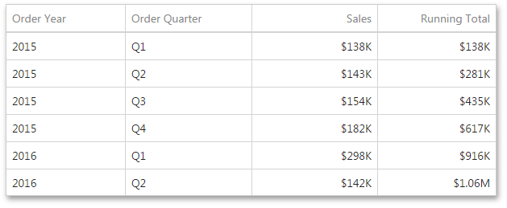
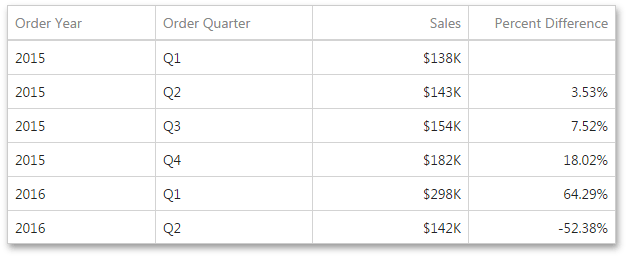

Calculations
Window calculations provide the capability to apply specific computations to measure values and allow you to perform different analytical tasks such as computing running totals, percentages of totals, differences, etc.
To create a window calculation, invoke the Bindings menu and click the required measure. In the invoked Data Item Menu, go to Calculations and select one of the available calculations.

After you have selected the required calculation, you can change its default settings by clicking the Edit button (the  icon).
This invokes the special window containing common and specific calculation settings:
icon).
This invokes the special window containing common and specific calculation settings:
Percent of Total
A calculation is used to compute a percentage of the total for the specified measure across a window.

- Window Definition specifies a window that limits measure values participating in a calculation. You can choose between the Predefined and Specific window definitions.
- For the Predefined window definition, you can specify the Definition mode that depends on the dashboard item type.
- For the Specific window definition, you can manually specify the set of dimensions that fall into the window.
- Expression displays an expression generated for the current calculation. To change the expression, click Edit.
In the Grid below, Percent of Total is applied to a fourth column to show a contribution of individual quarterly sales to total sales.

Running Summary
Can be used to compute a cumulative total for the specified measure across a window.

- Window Definition specifies a window that limits measure values participating in a calculation. You can choose between the Predefined and Specific window definitions.
- For the Predefined window definition, you can specify the Definition mode that depends on the dashboard item type.
- For the Specific window definition, you can manually specify the set of dimensions that fall into the window.
- Summary Type - Specifies a summary function used to apply a calculation.
- The Expression displays an expression generated for the current calculation. To change the expression, click Edit.
In the Grid below, the Running Total is applied to a fourth column to display cumulative sales across all quarters.

Difference
Can be used to compute the difference between measure values across a window.

- Window Definition specifies a window that limits measure values participating in a calculation. You can choose between the Predefined and Specific window definitions.
- For the Predefined window definition, you can specify the Definition mode that depends on the dashboard item type.
- For the Specific window definition, you can manually specify the set of dimensions that fall into the window.
- Target - Specifies the value used to calculate the difference. The following values are available: Previous, Next, First and Last.
- Difference Type - Specifies whether the absolute or percentage difference is calculated.
- Expression displays an expression generated for the current calculation. To change the expression, click Edit.
In the Grid below, the Difference is applied to a fourth column to show absolute differences between quarterly sales.

Percentage Difference
A calculation is used to compute the difference in percentages between measure values across a window.

- Window Definition specifies a window that limits measure values participating in a calculation. You can choose between the Predefined and Specific window definitions.
- For the Predefined window definition, you can specify the Definition mode that depends on the dashboard item type.
- For the Specific window definition, you can manually specify the set of dimensions that fall into the window.
- Target - Specifies the value used to calculate the difference. The following values are available: Previous, Next, First and Last.
- Difference Type - Specifies whether the absolute or percentage difference is calculated.
- Expression displays an expression generated for the current calculation. To change the expression, click Edit.
In the Grid below, Percentage Difference is applied to a fourth column to show percentage differences between quarterly sales.

Moving
The Moving calculation uses neighboring values to calculate a total.

- Window Definition specifies a window that limits measure values participating in a calculation. You can choose between the Predefined and Specific window definitions.
- For the Predefined window definition, you can specify the Definition mode that depends on the dashboard item type.
- For the Specific window definition, you can manually specify the set of dimensions that fall into the window.
- Summary Type - Specifies a summary function used to apply a calculation.
- Start Offset/End Offset - Specify start/end offsets from the currently processed value. For instance, if you specified offsets as 1/1, the previous and next values will be used along with the current value to apply the Moving calculation.
- The Expression displays an expression generated for the current calculation. To change the expression, click Edit.
In the Grid below, a Moving calculation is applied to a fourth column to show a moving average across all quarters.

Rank
Use the Rank calculation to compute rankings for the specified measure across a window.

- Window Definition specifies a window that limits measure values participating in a calculation. You can choose between the Predefined and Specific window definitions.
- For the Predefined window definition, you can specify the Definition mode that depends on the dashboard item type.
- For the Specific window definition, you can manually specify the set of dimensions that fall into the window.
- Rank Type - Specifies the type of ranking. The following ranking types are available: Unique, Competition, Dense, Modified and Percentile.
- Rank Order - Specifies the order of ranking. You can select Ascending or Descending.
- The Expression displays an expression generated for the current calculation. To change the expression, click Edit.
In the Grid below, a Rank calculation is applied to a fourth column to show a ranking of sales for individual quarters.

Custom
Use Custom to specify a custom calculation by adding the required calculation functions inside the measure expression.

- Window Definition specifies a window that limits measure values participating in a calculation. You can choose between the Predefined and Specific window definitions.
- For the Predefined window definition, you can specify the Definition mode that depends on the dashboard item type.
- For the Specific window definition, you can manually specify the set of dimensions that fall into the window.
- The Expression allows you to change the expression for the current measure. To change the expression, click Edit.